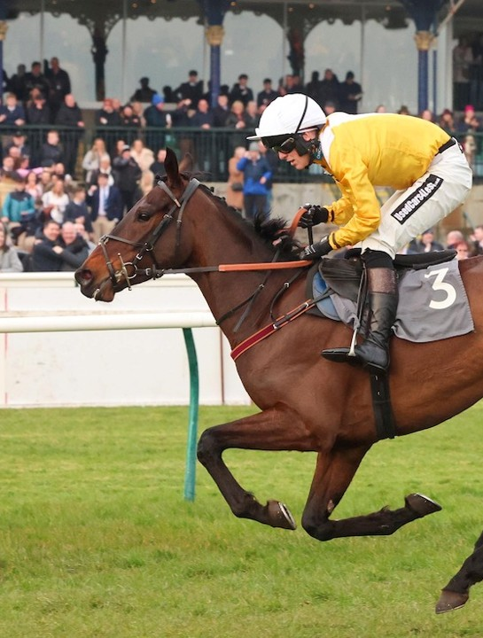

Kingston giữ kỷ lục về số trận thắng nhiều nhất đối với bất kỳ con ngựa thuần chủng (Thoroughbred) nào trong lịch sử. Trong suốt 10 năm thi đấu, ông hiếm khi rời khỏi bục nhận giải, trở thành biểu tượng của sự bền bỉ và đẳng cấp.
Thành tích: 89 trận thắng là con số mà các ngựa đua hiện đại ngày nay khó lòng chạm tới.
Sau khi giải nghệ, Kingston tiếp tục gây kinh ngạc khi trở thành ngựa giống hàng đầu tại Mỹ, chứng minh rằng bản năng chiến thắng của ông nằm ngay trong dòng máu.